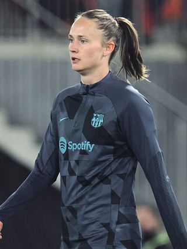

Ezzcoins › Player pages › Caroline Graham Hansen
89
RW

Graham Hansen
PAC88
SHO87
PAS88
DRI90
DEF47
PHY76
Photo (cropped): MichaelEmilio · CC BY-SA 4.0 · Wikimedia Commons
Photo source
https://commons.wikimedia.org/wiki/File:Brann_-_Bar%C3%A7a_Femen%C3%AD_CG3A5733_(cropped).jpg
Licence: https://creativecommons.org/licenses/by-sa/4.0
Caroline Graham Hansen
89 RW · FC Barcelona · Liga F Moeve ·  Norway
Norway
No console price yet. Cards rated 84 or higher are priced in turns through the day.
93Meta rating · RW +4 vs overall · RM 93
PAC88
SHO87
PAS88
DRI90
DEF47
PHY76
Chemistry style
Turn on JavaScript to see this card with each chemistry style.
- Position
- RW (also RM)
- Club
- FC Barcelona
- League
- Liga F Moeve
- Nation
- Norway
- Skill moves
- 5★
- Weak foot
- 5★
- Preferred foot
- Right
- PlayStyles+
- Technical+
- Football
- Women's football
Meta rating: Ezzcoins' own estimate of how well this card plays in game, worked out from its stats for each position it can play, its skill moves, weak foot and PlayStyle+. An average card scores about its overall rating; higher means it plays above its rating.
Watch on EzzcoinsMore from FC Barcelona
- 90
 Aitana BonmatíCM
Aitana BonmatíCM - 90Lamine YamalRW
- 90PedriCM
- 90RodriCDM
- 89Claudia PinaLW
- 89
 Ewa PajorST
Ewa PajorST - 88Patri GuijarroCDM
- 88
 RaphinhaLW
RaphinhaLW